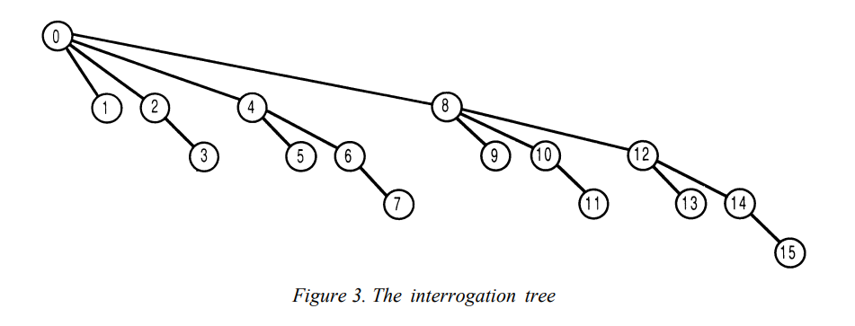

Preface
树状数组用起来很简单，但是比较难理解，不过网上资源比较多，在此加上自身理解整合一下。
（具体参考的博客文章附在下文中）
起源与介绍
树状数组或二元索引树（Binary Indexed Tree），又以其发明者命为 Fenwick 树，
初衷是用来解决数据压缩里的累计频率（Cumulative Frequency）的计算问题，
现多用于高效计算数列的前缀和、区间和（下面附有一些相关题目），
时间复杂度为 O(logn)，二进制在算法中的使用，有时使得时间复杂度降到与 n 的二进制中的 1 相关。
具体内容参考 paper： A New Data Structure for Cumulative Frequency Tables (aminer.org)
使用情景
可以解决大部分基于区间上的更新以及求和问题
相关题目：
307. 区域和检索 - 数组可修改 - 力扣（LeetCode） (leetcode-cn.com)
308. 二维区域和检索 - 可变 - 力扣（LeetCode） (leetcode-cn.com)
下面几题实质为偏序问题，树状数组是针对偏序问题的常用解法之一：
剑指 Offer 51. 数组中的逆序对 - 力扣（LeetCode） (leetcode-cn.com)
308. 二维区域和检索 - 可变 - 力扣（LeetCode） (leetcode-cn.com)
493. 翻转对 - 力扣（LeetCode） (leetcode-cn.com)
315. 计算右侧小于当前元素的个数 - 力扣（LeetCode） (leetcode-cn.com)
优缺点
修改和查询的时间复杂度都是 O(logn)，而且相比线段树系数要少很多，比传统数组要快，而且容易写。
但是遇到复杂的区间问题还是不能解决，功能还是有限。
参考博客：
推荐这一篇：(30条消息) 树状数组简单易懂的详解_FlushHip的博客-CSDN博客_树状数组
剩下两篇辅助理解：
树状数组详解 - Xenny - 博客园 (cnblogs.com)
树状数组（BIT）—— 一篇就够了 - Last_Whisper - 博客园 (cnblogs.com)
相关题目以及其他方法：
前缀和、差分、树状数组、块状数组 - 力扣（LeetCode） (leetcode-cn.com)
Details
lowbit 函数
树状数组需要用到的一个 function，作用是求某一个数的二进制表示中最低的一位 1。
举个例子，x = 6，它的二进制为 110，那么 lowbit(x) 就返回2，因为最后一位 1 表示 2。
具体的实现有两种写法：x - (x & (x - 1)) 或者 x & -x;，根据数学知识简单论证即可。
树状数组的思想
按照 Peter M.Fenwick 的说法，BIT 的产生源自整数与二进制的类比。
Each integer can be represented as sum of powers of two. In the same way, cumulative frequency can be represented as sum of sets of subfrequencies. In our case, each set contains some successive number of non-overlapping frequencies.
实际上，BIT 也是采用类似的想法，将序列和类比为整数的二进制拆分，举个例子：
一个数 n = 6 ，它的二进制为 110，我们将其表示成累加的形式：110 = 100 + 10，
这种拆分的形式恰好可以借助前文提到的 lowbit 方法，那么如何映射到序列和呢？
假设序列以数组 a 表示，那么前六项的前缀和为： sum[6] = a1 + a2 + a3 + a4 + a5 + a6；
按照上述二进制拆分的形式去拆分可以得到：sum[6] = (a1 + a2 + a3 + a4) + (a5 + a6)；
那么树状数组是怎么处理的呢？其定义了一个数组 tree，
tree[i] 表示从第 i 个元素向前数 lowbit(i) 个元素，这一段的和。
那么上述的前缀和可以按照这种形式表示成：sum[6] = tree[4] + tree[6]。
按照这种形式，我们可以表示出来任意区间的前缀和，但是该如何更新呢？
在介绍如何更新之前，先结合树状数组的经典图，来具体了解其相关性质。

（简要陈述图片含义，横坐标表示具体的序列，纵坐标表示层数，矩形表示 tree[i] 包含元素）
由这张图，可以得到树状数组的以下性质：
后缀和的长度是2的幂；
上一层后缀和的长度是下一层后缀和长度的两倍；
下一层后缀和只要补上自己后缀和的长度就可以得到上面层的后缀和(图中的虚框框)，
注意，是上面的后缀和，而不是上一层的后缀和，这个性质就是更新操作的依据；
最后一位 1 右边有多少个 0 (可以用
log2(lowbit(x))，就表示这一层有多少个直系子层(子层的意思就是这一层的和包含下面某一层的和)。
结合求区间和的方式以及性质，可以推出，更新时只要更新修改这个点会影响到的 tree 即可。
那么如何得到影响的 tree，结合性质三显而易见，x += lowbit(x) 即可。
既然已经陈述了其方法和思想，那么回到名字上，为什么命名为树状数组呢？
让我们回到最开始介绍此数据结构的 paper 里，可以看到下面两张图：

由这两张图可以看到，数组转化为树形结构，只不过省略了一些结点，有兴趣可以钻研一下。
代码模板
1 | // BIT |